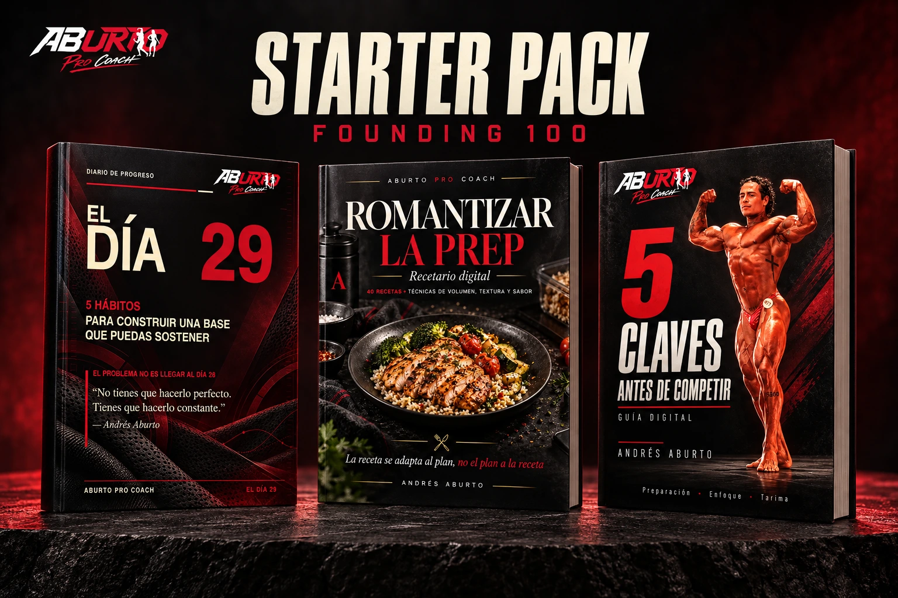
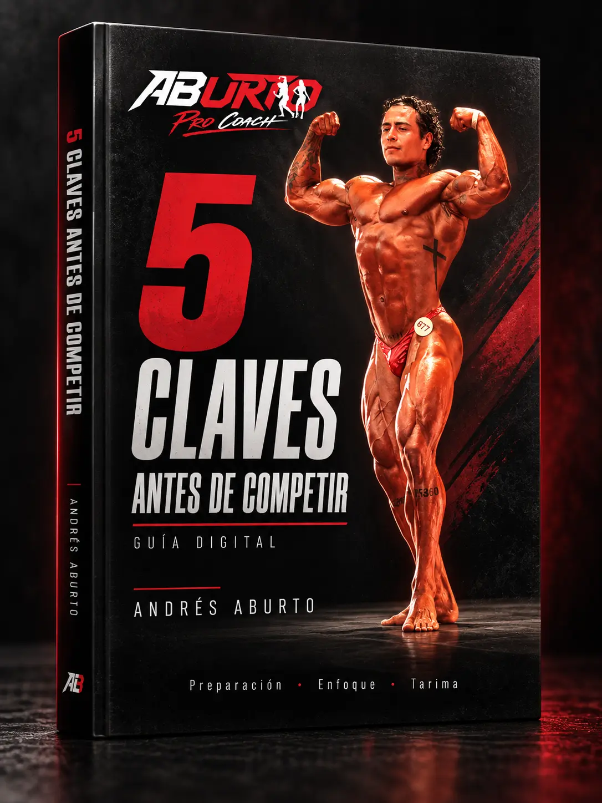

01 / Hábitos
EL DÍA 29
Construye sistemas para observar, ajustar y continuar cuando la motivación cambia.
Explorar este libro ↗Conocimiento convertido en herramientas. Hábitos para sostenerte, recetas para disfrutar tu plan y criterio para llegar preparado a la tarima.
Lanzamiento en preparación. La fecha de apertura se anunciará aquí.

Los tres productos completos, juntos en el Starter Pack. También puedes elegir cada libro de forma individual.
Construye sistemas para observar, ajustar y continuar cuando la motivación cambia.
Explorar este libro ↗40 recetas base y técnicas para hacer tu alimentación práctica, variada y sostenible.
Explorar este libro ↗
Condición, posing, puesta a punto, logística y ejecución con menos improvisación.
Explorar este libro ↗Hasta 100 compradores del Starter Pack durante la apertura recibirán Founding Access para el siguiente lanzamiento.
El Starter Pack incluye los tres libros. Posing Intensivo se adquiere por separado cuando se lance; Founding Access da acceso anticipado y un precio exclusivo.
El siguiente capítulo de Aburto Pro Coach.
PróximamenteLa fecha de apertura y el precio para miembros se comunicarán por correo.
El Día 29 + Romantizar la Prep + 5 Claves Antes de Competir.
Founding Access incluido para los primeros 100 miembros que completen su pago durante el lanzamiento.
Los tres libros digitales completos. Tras confirmar tu pago, habilitamos acceso personal a cada archivo y enviamos un correo con tres botones para abrirlos en Google Drive.
Al completar una compra del Starter Pack durante la apertura y antes de completar 100 miembros. Los lugares en proceso de pago se reservan temporalmente. Tu confirmación indicará tu número de miembro. Un formulario o un registro de interés no concede membresía.
El Starter Pack continúa disponible por $1,050 MXN, aproximadamente 23% de ahorro. Las compras posteriores incluyen los tres libros; Founding Access corresponde a la edición de apertura.
El curso se adquiere por separado cuando se lance. Founding Access te permite recibir aviso privado, comprar antes de la apertura pública y aprovechar un precio exclusivo.
Abre cada enlace con la cuenta asociada al correo de tu compra. El acceso es personal y se habilita para ese correo.
Son recursos educativos para aplicar a tu proceso. Los servicios de coaching y Posing Coaching se contratan por separado desde la página principal.